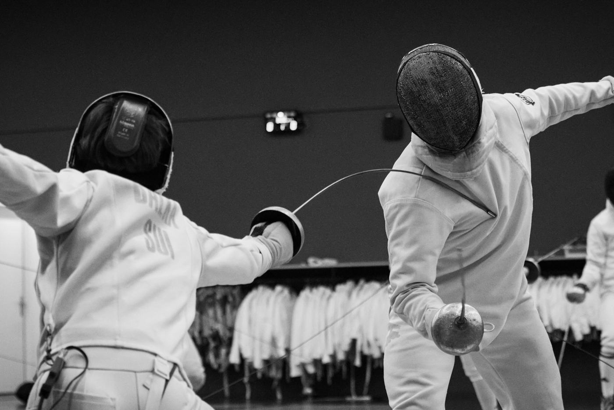
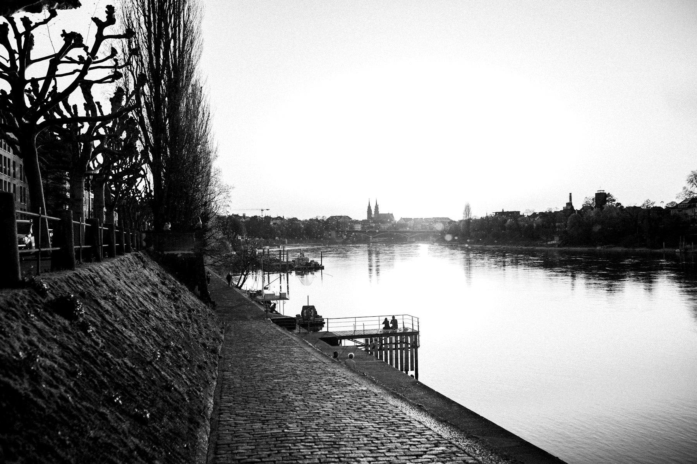
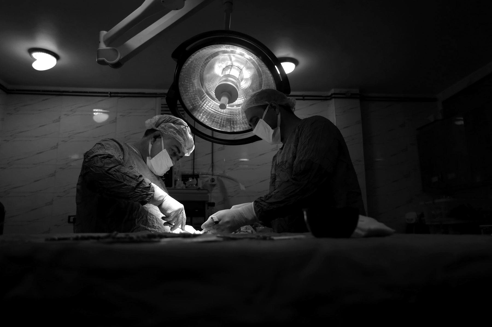
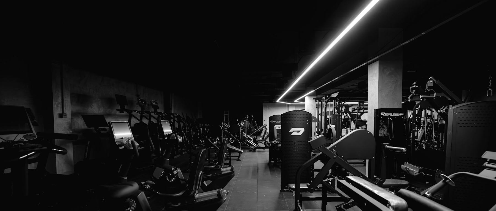
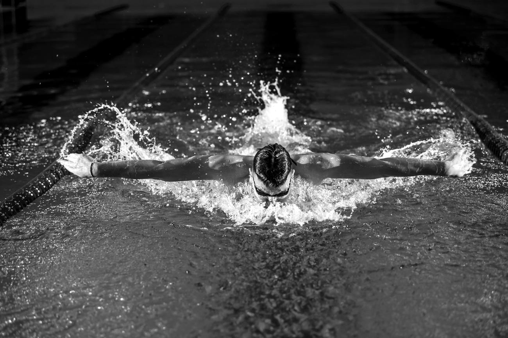
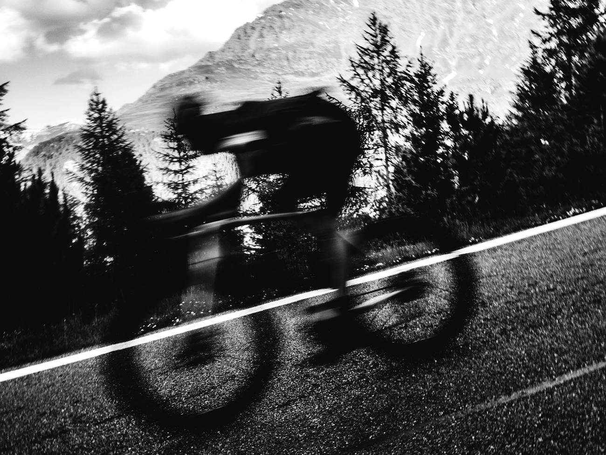
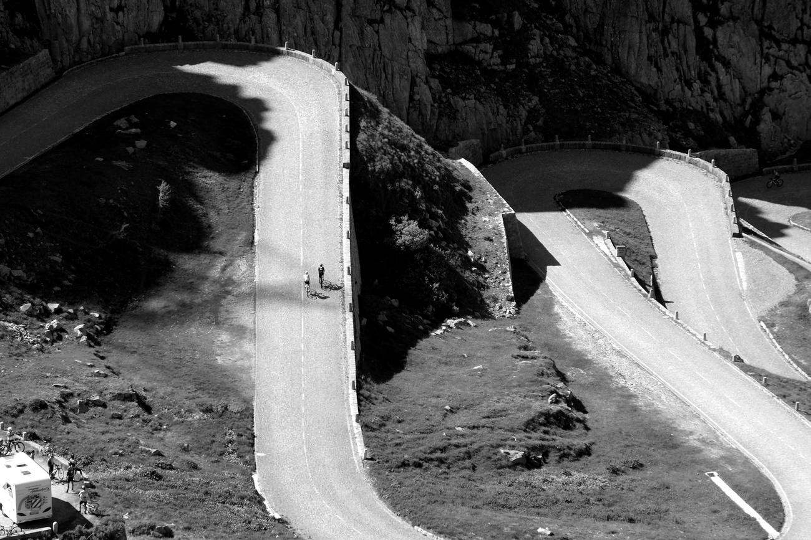
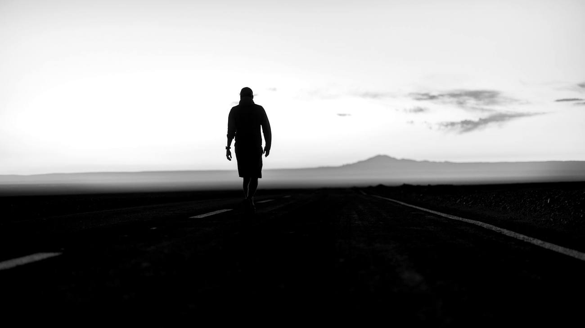

Fechten, Degen
Distanz, Timing und Entscheidungen unter Druck.
- Waffe
- Degen, auch Florett
- Training
- Zweimal pro Woche im Verein, Region Saar
- Turniere
- Ranglistenturnier 2025/26, Open-Air-Turnier Region Saar 2026
Medizinstudent im klinischen Abschnitt an der Universität des Saarlandes in Homburg. Orthopädie und Unfallchirurgie, Sportmedizin und Prävention.
Ich studiere Medizin im klinischen Abschnitt an der Universität des Saarlandes. Mich fasziniert der Bewegungsapparat: wie Menschen sich bewegen, sich verletzen und wieder zurückkommen. Außerhalb der Klinik fechte ich und trainiere.
Vom Studienbeginn 2022 bis zum geplanten Praktischen Jahr in Basel.
Universität des Saarlandes, Campus Homburg.
Neurochirurgie und Innere Medizin am Klinikum Saarbrücken, Innere Medizin am UKS Homburg.
Erster Abschnitt der Ärztlichen Prüfung, danach Wechsel in den klinischen Abschnitt.
Praktischer Kurs in Kataraktchirurgie (HOYA).
Universitätsklinikum des Saarlandes, Homburg.
Studium in Homburg.
Innere Medizin und Chirurgie am Universitätsspital Basel, Wahltertial Orthopädie an der Schulthess Klinik Zürich.

Die Fächer, die mich im Studium am meisten interessieren.
Gelenk- und Sportverletzungen, operative Versorgung und der Weg zurück in die Belastung.
Belastungssteuerung, Leistungsdiagnostik und die Rückkehr in den Sport.
Bewegung und Training als Therapie und Vorbeugung.

Der Ausgleich zur Klinik: Fechten, Laufen und Kraft, dazu Klavier.

Distanz, Timing und Entscheidungen unter Druck.

Ausdauer auf der Straße, Krafttraining seit 2021.
Strava-Stand: 29.10.2026
Die Ausdauerbasis für die Pläne der nächsten Jahre.




Der ruhige Gegenpol zu Klinik und Training.
Für fachlichen Austausch oder Anfragen. Den Lebenslauf verschicke ich auf Anfrage per E-Mail.
joshuaforster02 [at] gmail.com